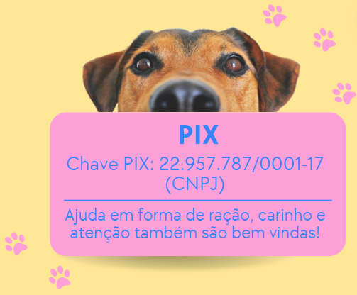

ONG Dona
Zuleika
Com passos de quatro patas, lutamos por um mundo
em que cada cãozinho e cada gatinho encontre um lar
cheio
de amor e cuidado!
Como tudo começou:
A história da ONG remonta a muitos anos antes de sua formalização. Dona Zuleika,
uma moradora de Bebedouro - SP, apaixonada por animais, já era conhecida na comunidade
por sua dedicação em cuidar de cães e gatos que encontrava nas ruas. Em sua própria casa,
Dona Zuleika oferecia abrigo, alimentação e cuidados médicos para esses animais, muitas vezes
com recursos próprios e contando com a ajuda de voluntários e amigos que compartilhavam do mesmo
amor pelos bichinhos.
Oficialmente, foi fundada como Organização Não Governamental em 23 de julho de 2015. Com sede na
cidade de Bebedouro, a ONG é cadastrada no segmento de ONGs e Entidades Sociais, dedicando-se com fervor
ao cuidado e proteção de cães e gatos abandonados e em situação de vulnerabilidade.
Conheça alguns de nossos amiguinhos:
Seja parte da mudança:
sua doação faz a diferença para nossos
bichinhos!

Venha nos
visitar!
R. Dr. Brandão Veras, 184 - Centro, Bebedouro - SP, 14700-030
(17) 99206-8323